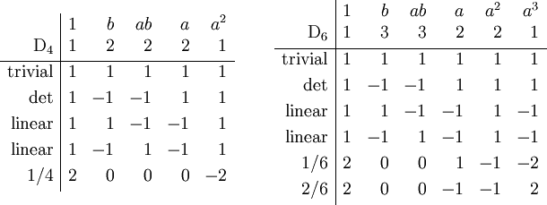

|
|
Fall 2014, TTh 2:30 - 3:45, LOM 205.
Office hours: Mon 1-4pm, 404 DL.
The course is intended for advanced undergraduate and beginning graduate students. Its main focus is the representation theory of finite groups over the complex numbers. However, we will try to view the subject in a more unified way and emphasize the results common to representation theory of groups, associative algebras, Lie algebras, and quivers. Linear algebra (Math222, Math225 or Math230) is a prerequisite, and some knowledge of group theory is welcome, although we will review the necessary basics in class.
Topics include:
Associative algebras, examples; basic concepts in representation theory: subrepresentations, quotients, direct sums, tensor products; representations of finite groups over complex numbers; characters and orthogonality relations; induced representations, representations of the symmetric group. Depending on the background and interest of the audience, we will consider further representations of compact groups, Lie algebras, or quivers.
Reading:
The main text for this course is
P. Etingof, O. Goldberg, S. Hansel, T. Liu, A. Schwendner, D. Vaintrob, E. Yudovina,
Introduction to Representation Theory with historical interludes by Slava Gerovitch, AMS, Student Mathematical Library Volume 59, 2011.
Additional sources include:
J. -P. Serre, Linear Representations of Finite Groups (Parts I and II)
M. Artin, Algebra (Chapters 2 and 6)
C. Teleman, Representation Theory
A. Baker, Representations of Finite Groups
P. Webb, Finite Group Representations for the Pure Mathematician
For a historical overview of the subject see T.Y. Lam, Representations of finite groups: A hundred years
part 1 and
part 2.

Character tables for dihedral groups D4 and D6.